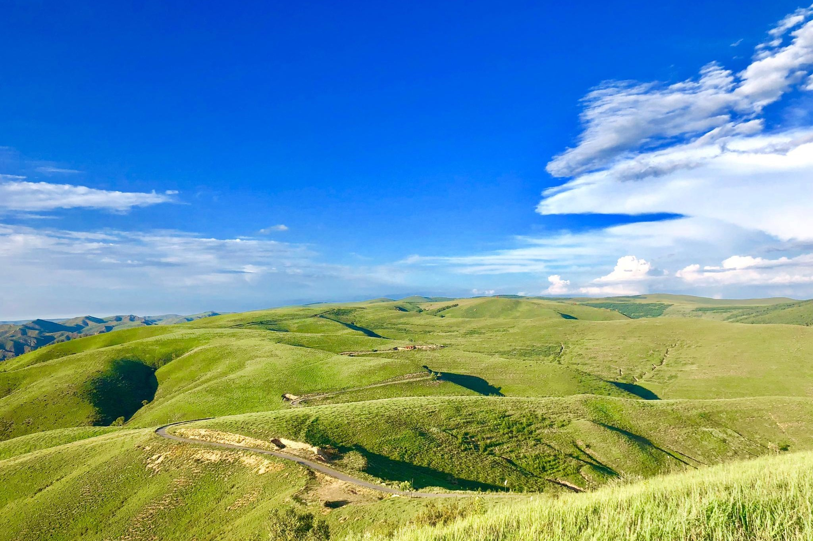
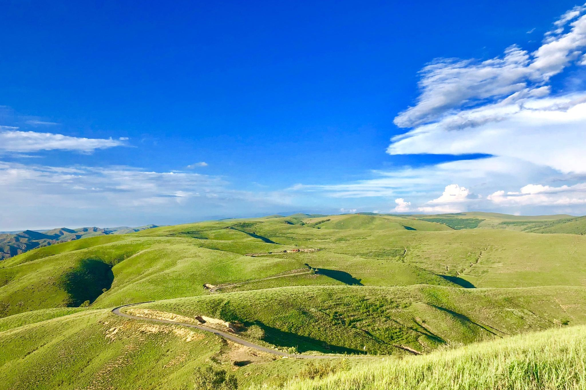

.jpg)
Internetware 2022
Huhhot, China, June 11-12, 2022

Sponsors


 

Welcome to Internetware 2022!
Internetware 2022, the 13rd Asia-Pacific Symposium on Internetware, provides a forum for researchers and practitioners to discuss the trending software technologies in the Internet era.
Internet provides an open global infrastructure for exchanging and sharing resources for people all over the world. The rapid development and the wide application of Internet make it become a new mainstream platform for software to be used, developed, deployed, and executed. With the vision of “Internet as a Computer”, many application styles such as pervasive computing, grid computing, service computing, and cloud computing emerged in this open and dynamic environment.
To support new forms of applications and accommodate the fundamental changes of the underlying supporting platform, software technologies such as service-oriented architecture are proposed for current practices. However, these popular technologies are far from systematic and complete because no uniform software methodology and technology system like the object-oriented one is provided.
Software in the Internet era should autonomously, cooperatively, situationally, emergently, and trustworthily adapt to the new environment. The software entities dispersed on distributed nodes over the Internet, which evolved from objects in object-oriented methodology to software components (component-based software development), now are further turned into self-contained, autonomous and adaptive software services in service-oriented computing of state-of-arts. These software entities are coordinated statically and dynamically in various interaction styles (passively and actively) such as integration, cooperation, and orchestration to achieve flexible design objectives. So a so-called “software-web” instead of information-web is weaved. This software-web as a whole can perceive the changes of open, dynamic, and uncertain environments and respond to them in the way of transforming architectures. Furthermore, the flexible design objective of the software-web is reflected by its exhibiting several compatible goal-directed behaviors according to its up-to-date knowledge about the outside environment.
Therefore, a portmanteau term “Internetware” is used to denote the future software-web in open and dynamic environment, which can be defined as follows: an Internetware system is a software system consists of the self-contained, autonomous entities situated in the distributed nodes of Internet and the coordinators connecting these entities statically and dynamically in various kinds of interaction styles (passively and actively). As a whole, an Internetware system is able to perceive the changes of open and dynamic environment such as Internet, respond to the changes in the way of architectural transformation, and exhibit context-aware, adaptive and trustworthy behaviors in the open and dynamic environment in order to meet its flexible design objectives. Internetware challenges many aspects of software technologies, from operating platforms, programming models, to engineering approaches, etc.
Keynotes
TBD
Program
TBD
Call for Papers
With the Internetware paradigm, the software is architected like the Internet, developed with the Internet, operated on the Internet, and provided as services via the Internet. In the open, dynamic, and constantly changing environment of Internet, Internetware systems need to be autonomous, cooperative, situational, evolvable, emergent, and trustworthy. These requirements pose special challenges for software technologies to support the construction, deployment, and use of software applications based on Internet that not only of computers, but also of things and human users.
This symposium aims to provide an interactive forum where researchers and professionals from multiple disciplines and domains meet and exchange ideas to explore and address the challenges brought by Internetware.
Internetware 2022 will be held June 11-12 in Huhhot, China. We solicit submissions describing original and unpublished results of theoretical, empirical, conceptual, and experimental software engineering research related to Internetware. Topics of interests include but are not limited to:
- Novel software paradigm for Internetware
- Modeling and implementation of Internetware
- Requirements engineering for Internetware
- Software analysis, verification and testing
- Mining software repositories
- Software dependability, trustworthiness and confidence
- Software architecture and design
- Crowd-based methods, techniques and tools for Internetware
- Social-technical models and techniques
- Software ecosystem practices and experiences
- Software models and techniques for Internet-based systems such as Cloud Computing, Service Computing, Social commputing, Mobile Internet, Internet of Things, and Cyber-Physical Systems
- Software engineering for/with Big data
- Software engineering for/with Artificial Intelligence
Special Tracks
Internetware 2022 organized several special tracks in collaboration with multiple top-tier transactions/journals. Papers submitted into the main track will be selected and invited to submit an extended version of their papers to the Journal of Computer Science and Technology. All the extended submissions will be evaluated following the guidelines set by the corresponding journal. Only those satisfying all the criteria will be accepted for the journal publication.
Papers submitted and accepted by the corresponding special tracks will be published in the Internetware 2022 proceeding firstly, and be invited to submit an extended version of their papers to the corresponding journals. All the extended submissions will be evaluated following the guidelines set by the corresponding journal. Only those satisfying all the criteria will be accepted for the journal publication.
Submission
Papers must be submitted electronically through EasyChair. Please specify the track for your submission.
All submissions must be in English and in PDF format. Submissions that do not comply with the above instructions will be desk rejected without review. Please use the ACM Master article template, as can be obtained from the ACM Proceedings Template pages.
Following types of papers are welcomed:
- Full papers, which must not exceed 10 pages for all text, figures, tables, and references.
- Short papers, which must not exceed 6 pages for all text, figures, tables, and references.
- Short papers (no proceeding). The requirements are the same as short papers. Authors are required to give oral presentations. However, papers in this track will not appear in the proceedings.
Important Dates
- Submission Deadline: February 20, 2022
- Notification of Acceptance: April 17, 2022
- Camera-Ready Version: April 30, 2022
Important Dates
- Submission Deadline: February 20, 2022
- Notification of Acceptance: April 17, 2022
- Camera-Ready Version: April 30, 2022
Steering Committee
Co-Chairs
- Hong Mei, Peking University, China
- Jian Lyu, Nanjing University, China
Members
- Zhi Jin, Peking University, China
- Tao Huang, Chinese Academy of Sciences, China
- Daoxu Chen, Nanjing University, China
- Jianmin Wang, Tsinghua University, China
- Xuandong Li, Nanjing University, China
General Co-Chairs
- Zhi Jin, Peking University, China
- Xuandong Li, Nanjing University, China
- Guanglai Gao, Inner Mongolia University, China
Program Committee
Co-Chairs
- Jun Pang, University of Luxembourg, Luxembourg
- Lei Bu, Nanjing University, China
- Ge Li, Peking University, China
Members
- Chunyang Chen, Monash University, Australia
- Liqian Chen, National University of Defense Technology, China
- Yang Liu, Nanyang Technological University, Singapore
- Taolue Chen, University of London, UK
- Yuting Chen, Shanghai Jiao Tong University, China
- Zhengbang Chen, National University of Defense Technology, China
- Yang Feng, Nanjing University, China
- Cuiyun Gao, Nanyang Technological University, Singapore
- Fuyuki Ishikawa, National Institute of Informatics, Japan
- He Jiang, Dalian University of Technology, China
- Lingxiao Jiang, Singapore Management University, Singapore
- Yanyan Jiang, Nanjing University, China
- Yu Jiang, Tsinghua University, China
- Yuanfang Li, Monash University, Australia
- Hui Liu, Beijing Institute of Technology, China
- David Lo, Singapore Management University, Singapore
- Lei Ma, University of Alberta, Canada
- Xiaoxing Ma, Nanjing University, China
- Hidehiko Masuhara, Tokyo Institute of Technology, Japan
- Hausi Mller, University of Victoria, Canada
- Michail Papadakis, University of Luxembourg, Luxembourg
- Yu Pei, HK Polytechnic University, China
- Xin Peng, Fudan University, China
- Shengchao Qin, Teesside University, UK
- Jun Sun, Singapore Management University, Singapore
- Ting Su, East China Normal University, China
- Kenji Tei, Waseda University, Japan
- Jingyi Wang, Zhejiang University, China
- Anton Wijs, Eindhoven University of Technology, Netherands
- Xin Xia, Huawei, China
- Tao Xie, Peking University, China
- Xiaofei Xie, Nanyang Technological University, Singapore
- Jifeng Xuan, Wuhan University, China
- Fuyuan Zhang, MPI-SWS, Germany
- Chenyi Zhang, Jinan University, China
- Jie Zhang, University College London, UK
- Haiyan Zhao, Peking University, China
- Junfeng Zhao, Inner Mongolia University, China
- Minghui Zhou, Peking University, China
- Zhiqiang Zuo, Nanjing University, China
- Yuxia Zhang, Beijing Institute of Technology, China
Local Arrangement Co-Chairs
- Jiantao Zhou, Inner Mongolia University, China
- Junfeng Zhao, Inner Mongolia University, China
Web Chair
- Yongqiang Gao, Inner Mongolia University, China
Financial Chair
- Yongqiang Gao, Inner Mongolia University, China
Proceedings Chair
- Lingling Fan, Nankai University, China
- Yang Feng, Nanjing University, China
Publicity and Social Media Chair
- Lei Ma, Kyushu University, Japan
- Yanyan Jiang, Nanjing University, China
- Shaopeng Wang, Inner Mongolia University, China
Conference Venue Information

The conference venue will be The Inner Mongolia Xincheng Hotel. Xincheng Hotel, situated in the center of Hohhot, the capital city of Inner Mongolia Autonomous Region, covers an area of 121,000 square meters. Here you can find a peaceful and beautiful environment and gardens carefully planted in the midst of modern buildings. On this wonderful and rich field, it is equipped with modern facilities such as lodging, food and beverage, entertainment, SPA, exhibition and club as well as other devices. In addition, there are more than 600 beds, over 20 meeting rooms, 45 restaurants, bars and banquet halls, an 18-lane bowling alley, video games and other kinds of entertainment and recreation facilities, which create a wonderful and pleasant place for people. Xincheng Hotel has also been equipped with an intranet and internet system, enabling many business transactions to be conveniently conducted online, such as reservations, receptions, reception, registration, enquiries, monitoring, fire control, checking in and checking out, which will assist out guests in utilizing fast, safe, and high-quality service.
Address: 40. Hulun S. Rd. Hohhot, Inner Mongolia, China
Tel: +86-471-6660888
Fax: +86-471-6931141

Accommodation
TBD
Travel

- Inner Mongolia exhibition hall
- Dazhao Wuliang Temple
- Qingcheng Park


Hohhot Gourmet
- Roasted Whole Lamb
- Boiled sheep on ice
- Barbecue